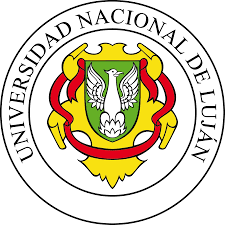
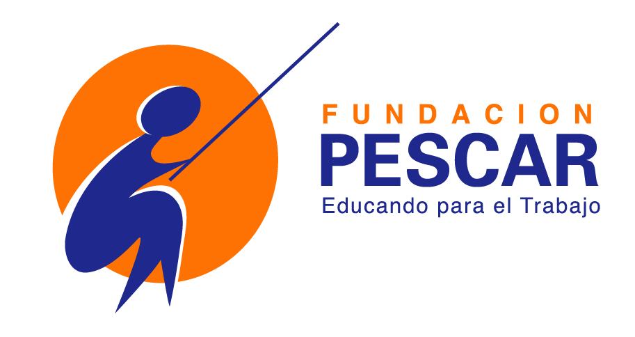

Sobre mi:
Soy una estudiante de la carrera "Licenciatura en Sistemas de Información" (2do/3er año) en la universidad de Luján.
Actualmente realizo una pasantía en investigación sobre habilidades socio-emocionales dentro de la industria 4.0, donde participo en el análisis de datos y elaboración de reportes.
También estoy cursando Desarrollador Web Full-Stack en Fundación Pescar, aplicando mis conocimientos en proyectos prácticos.
Me gusta mucho el lenguaje Java, el paradigma de POO y crear cosas útiles que puedan facilitarle la vida a las personas
Valores:
- El trabajo en equipo es la forma más eficiente de llevar a cabo proyectos ambiciosos.
- La comunicación es el camino largo y difícil para obtener los mejores resultados posibles.
- La constancia y la perseverancia son quienes muestran los resultados
- Tener plazos de entrega es la clave para una buena organización
- Reconocer errores es la siembra para cosechar mejoras
Cada valor se ve reflejado en mis experiencias académicas y laborales, donde he trabajado en equipo y gestionado proyectos de manera constante y organizada.
Habilidades técnicas:
He desarrollado mis habilidades de programación tanto en los cursos que mencioné como también en trabajos que he hecho en la universidad, tanto en solitario como en equipo.
Habilidades blandas:
-
Comunicación efectiva: aprendida trabajando en equipo y atención al cliente.
-
Trabajo en equipo: coordinación de actividades en proyectos académicos y cursos.
-
Adaptabilidad: aprendizaje rápido de nuevas herramientas y procesos.
-
Responsabilidad: gestión de tareas y cumplimiento de plazos en distintos contextos.
Experiencia:
-
Pasantía (UNLu)
He tenido que adaptarme y aprender a utilizar distintas herramientas que desconocía, adquiriendo así conocimientos útiles.
Como por ejemplo: Wikipedia, Wikidata, Zotero. -
Desarrollador Web Full-Stack (Fundación Pescar)
Un curso muy completo que tiene tanto la parte técnica como una orientación profesional, donde pude aprender a gestionar mis emocionesy a comunicarme de una forma mucho más amena y asertiva.
Además tuve que trabajar mucho en equipo para las distintas actividades de presentación que nos han dado, dando siempre lo mejor y aprendiendo constantemente gracias al feedback -
Selección de personas por competencias (CEGRAD)
Un curso muy útil que me ayudó a cambiar mi mentalidad en cuanto a la comunicación, la forma en que me muestro y en que veo a los demás
-
Heladería Grido (Luján)
Trabajé en las dos sucursales de Luján.
Lo que me llevo de este trabajo es haber comenzado a desarrollar mis habilidades blandas.
En cuanto a los roles que tuve, fui moza, fui cajera, fui la encargada del control de stock y también quien se ocupaba de subir contenido a las redes sociales. Aprendí a crecer y a aprovechar todas las oportunidades que se me presentaban
Proyectos:
-
Juego de cartas "UNO"
Desarrolle un juego de cartas UNO en el lenguaje de JAVA, aplicando el paradigma POO, incluyendo la posibilidad de jugar de manera LAN gracias a una librería RMI
-
Portfolio
Gracias a lo aprendido en el curso de "Desarrollador Web Full-Stack" tuve la posibilidad de crear toda esta página web para poder presentarme en un formato un poco más profesional
-
Próximamente
Recién estoy comenzando mi carrera profesional, así que tengo muchos proyectos en mente y otros en desarrollo, así que queda tener paciencia y seguir avanzando, espero que próximamente puedan ver mis proyectos y mi trayectoria profesional crecer
Contactame:
Gracias por tomarte el tiempo de leer mi perfil, tengo muchas ganas de crecer profesionalmente, espero que nos veamos pronto!